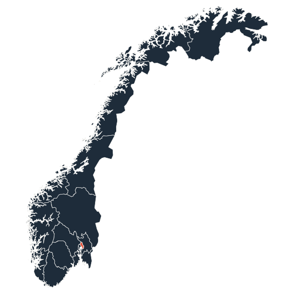
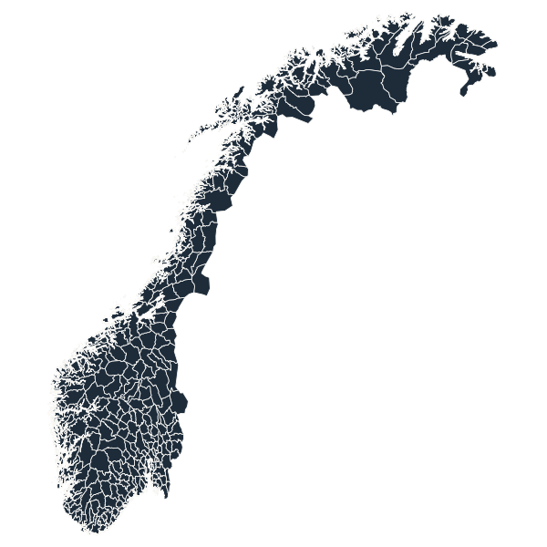
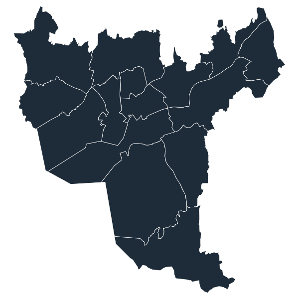

Geographic granularities
01
County
All Norwegian counties, in multiple layouts and coordinate systems.
02
Municipality
Full municipal maps for the 2024, 2020, 2019 & 2017 redistricting.
03
City ward
Detailed Oslo bydeler for fine-grained urban reporting.
Map gallery


